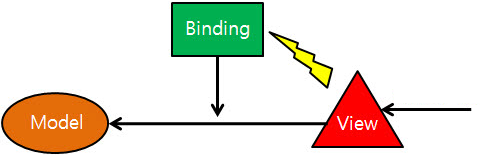
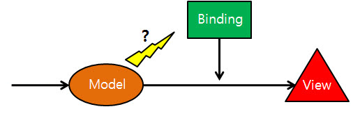
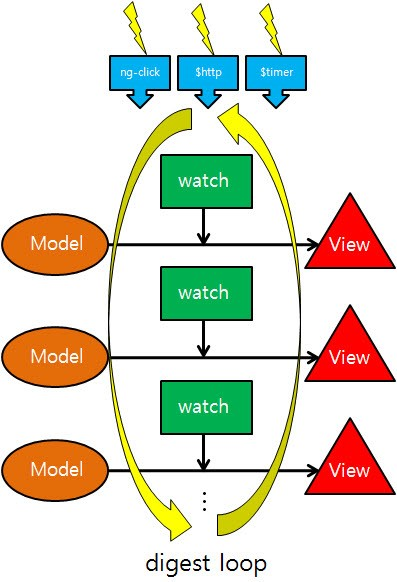
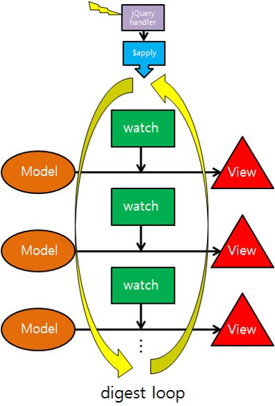
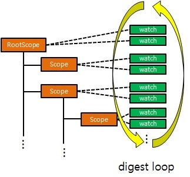
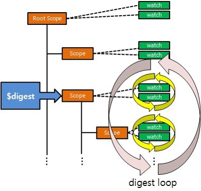
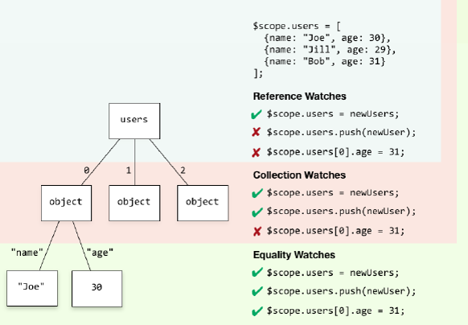

Data Binding in AngularJS
- automatic propagation of data changes;
- the view it's updated automatically when the model is changed;
- model is updated automatically when a value in the view has changed.
- no DOM manipulation needed.
Principle of bidirectional Binding of AngularJS - digest loop
One of the essential features of the Javascript MVC framework is the binding between Model and View.
Typically, HTML input elements generate events when there is input from the user and write code that reflects the data in the event listeners.
If there is a change in the model in any way, you must generate an event that this model has changed, and you will be able to write code that reflects the data in the event listener.
Digest Loop
AngularJS is configured to work with code that reflects the model to the View for these three cases
- Handlers for ng-click, ng-mousedown, etc.
- success, error handler in $ http
- $ timer
In the above case, the process of allowing AngularJS to reflect the model to the view is called digest loop
As shown in the figure(right), the watch registered in the scope becomes the code that reflects the model to the view, and the digest loop is called because the process of executing these watches is executed periodically.
However, since the digest loop is operated by AngularJS, the digest loop does not work if AngularJS does not know the above three cases.
For example, if you use an event handler in jQuery instead of ng-click for any HTML element, the model will not be reflected in the View.
<body ng-controller="fooCtrl">
<div> {{text}} </div>
<input id="btn1" type="button" value="button" ng-click="btnClick()" />
<input id="btn2" type="button" value="button"/>
</body>
Example : app.js
function fooCtrl($scope){
$scope.text = "";
$scope.btnClick = function(){
$scope.text = "btn1 click" // Your Changes appear on the screen
}
Jquery("btn2").click(function(){
$scope.text = "btn2 click"; //Your changes do not appear on the screen
})
}In the above code, the {{text}} expression will register a watch for scope.text by default. In the case of btn1, you can see that the click event is handled using AngularJS, the event handler for btn2 is using jQuery, and for btn2, the changes are not directly reflected in the view.
For this case, AngularJS has a device that can arbitrarily operate this digest loop, which is $scope.$apply(). If you modify the above code as follows
function fooCtrl($scope){
//...
Jquery("btn2").click(function(){
$scope.text = "btn2 click";
$scope.$apply();
})
}
You can see that the contents are reflected in the view as well.
Scope in Angularjs
The scope has two important lists: the watch list and the event listener list.The watch and digest loop exist to implement the binding.
By default, the watch is registered in the scope and the digest loop is executed at the appropriate time to execute the registered watch.
However, the process of performing a digest loop is more precisely the scope of the $digest() function, which calls the $digest() function to execute the digest loop.
$scope.digest()
When the scope. $ Digest function is called, the list of watches registered in the scope is executed, and in turn the watch lists of that scope are recursively executed.
But scope has $apply() function instead of $digest().
In the previous example, i was calling $apply, not $digest, to run the digest loop.
So what is the difference between $digest and $apply?
Both functions are like running a digest loop, but there are differences in their scope. That is, $digest performs a digest loop only for the scope that invoked the $digest and its sub scopes, but $apply calls the $scope for the root scope, so the digest loop is performed for all scope watches will be.
Finally, the scope maintains a list of event listeners that can respond to events. These events are events that are used entirely within AngularJS, not events that occur in a browser or HTML DOM Element.
This event can be raised through scope, and the flow of that event will also move along the scope.
$watch, $apply & $digest
Angular uses some main components to implement 2 way data binding :
- $watch
- $apply
- $digest - dirty checking
$watch
Angular extends the browser events-loop and creates the angular-context;
Every time something is bound in the html a watcher is inserted in a watch list;
A watcher consist of:
- a watch function that returns the current value of the property it is watching;
- a listener function that will be triggered if a change happened.
- the last value returned by the watch function;
First Name: <input type="text" ng-model="user.firstName" />
Last Name: <input type="text" ng-model="user.lastName" />
Doing this two watchers are registered.
<ul>
<li ng-repeat="user in userList"> {{user.firstName}} {{user.lastName}} </li>
</ul>
For 10 people in the list it will be (2 * 10) + 1 watchers registered.
$digest loop
Angular knows about browser events-loop;
When the browser receives an event that can be handled by angular-context the $digest loop will be fired;
The $digest loop is made from two smaller loops:
- $evalAsync queue;
- $watch list;
The $digest will loop trough the watchers list:
- It will check the current value returned by the watchfunction;
- It will compare the current value with the last value;
If the equality test fails, it will:
- call the listener function associated with that watcher;
- it will set the current value as last value;
- it will set the $scope as dirty;
- If the $scope is dirty, another $digest loop is triggered.
$apply()
Angular calls $apply under the hood when we use framework directives like:
ngClick, ngModel,ngChange, etc.
The $apply function executes expressions in angular context and then calls the $digest;
Where to use $apply? In most of the cases in directives where you handle events manually;
When you use 3rd party code that will change the $scope;
app.directive('click', function() {
return {
scope: { name: '=' },
link: function(scope, element, attrs) {
element.on('click', function() {
scope.$apply(
function() { scope.name = 'new name'; }
);
});
}
}
});
$digest(),$apply()
Angular doesn’t directly call $digest(). Instead, it calls $scope.$apply(), which in turn calls $rootScope.$digest(). As a result of this, a digest cycle starts at the $rootScope, and subsequently visits all the child scopes calling the watchers along the way.
Services: $http, $timeout, $interval
Directives: ngClick, ngChange, ngFocus, ngPaste, etc...
When inside a watch listener, no need to trigger a digest!
// Apply changes: execute function and call $digest
$scope.$apply(function () {
$scope.myModel = 'Hello';
});
If you use JavaScript’s setTimeout() function to update a scope model, Angular has no way of knowing what you might change.
In this case it’s your responsibility to call $apply() manually, which triggers a $digest cycle.
Html
<body ng-app="myApp">
<div ng-controller="MessageController"> Delayed Message: {{message}} </div>
</body>
/*Without Apply*/
angular.module('myApp', []).controller('MessageController', function($scope) {
$scope.getMessage = function() {
setTimeout(function() {
$scope.message = 'Fetched after 3 seconds';
}, 2000);
$scope.getMessage();
}
})
/*With Apply*/
angular.module('myApp', []).controller('MessageController', function($scope) {
$scope.getMessage = function() {
setTimeout(function() {
$scope.$apply(function() {
$scope.message = 'Fetched after 3 seconds';
});
}, 2000);
}
$scope.getMessage();
});
Watching Depth
$scope.$watch(watchExpr, listener)
for watching primitives or object references
$scope.$watchCollection(watchExpr, listener)
for watching additions and deletions in Arrays
$scope.$watch(watchExpr, listener, true)
for objects and arrays equality (using angular.equals)
From View To Model
Javascript DOM Event model: Event, KeyboardEvent, MouseEvent... Easy to bind model to view in Angular directives
add.directive("input", function() {
return {
restrict: 'E',
scope: false,
link: function(scope, element, attrs) {
element.bind('input', function(event) {
scope.$apply(function() {
scope.model = element.val();
})
})
}
}
})